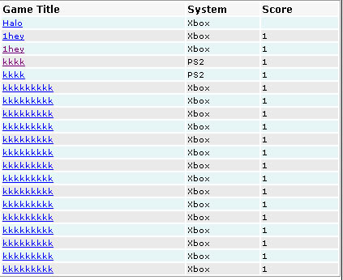

·
Displaying articles
Over View: While a cms managers your articles a display engine spits out the
actual display, ncaster 1.7 is equipet with the MorLock engine which should
be abble to recreate anything you can think of in a dynamic maner.
Morlock supported features.
-
Custom fields now supported in most first part modules.
- You can dynamicly change tag values or set new tags and variables on the
fly.
- Custom field filtering.
- Entity2, PHP scripting is also supported.
- Article Binding, though the use of the hubs module.
Displaying Articles .
1. Creating a template.
In order to display a article you will first need to assign a template, this can be done by login in to your admin then click settings > Add full page layout now copy and past your template to the main template box and give the template a title or select a title from the - Possible template assiciations - drop down list.
now insert the correct tags in your template so content can be displayed, heres some tags and there uses.
| Tag | Use |
| <!$news$> or <!$content$> | Displays the specified modules or the current articles news out put, if no module is run by ?load= it will defalt to the news display module unless of couse you are loading a page with id= or rid= in this case a display module is loaded. You need this tag in your full page templates to see any output for news or other wise. |
| <!$subject$> | Displays the current articles subject. |
| <!$description$> or <!$news_desc$> or <!$news_des$> | Displays the current articles news description. |
note: more tags can be found on the tags page with in this documentation (here)
Example
template:
<html><head></head>
<title>My page: <!$subject$></title>
<body><!$news$></body>
</html>
2. assigning the template.
Ncaster
supports two template assigning methods one you may have already used with
out knowing this one is called the title assigning method, by placing a specially
formatted title in to the title of your new layout it will automatically be
assigned to the module and category it's pointing to example:
module:display;.
In that example if you load a article using ?id= it will use that template
no mater what category.
The second type of assigning ncaster supports is category based, these category based assigns act as universal templates which can be overwrote by the above method, to assign a universal category template click settings > assign a template.
Editing templates for modules.
There is two ways to do this, you can edit the files in ex_templates/ folder or you can use the new assign method. To use the new name based assiging method allows you to assign templates to any category with in a module and even beater it allows you to assign styles with in the module please see name based assiging for more information.
Custom filters .
one of ncasters very unquie features is the ability to filter by custom fields lets look at a index of results by azlist.

Here
we have a list of games each have there own console system but what if we
wanted to just show the results that where on the gamecube system ?
If we apply f_system=Gamecube to the url we can show just the systems with
gamecube heres a look at the new list.

Much
beater, we could also apply a dubble value for if we wanted to match 2 systems
but by the same custom field by doing
f_system=Ps2/Xbox

Easy enought ?
Usefull
tips .
1. Entity allows you to apply dynamic effects on your azlist cells, use it
to create profesional looking tables (see below)
| 1 | My shoping list |
| 2 | My car photos |
| 3 | websites |
2. Use custom filters, custom filters enables you to filter content for your user to show the least results while displaying the most information the user wants, to use custom filters is easy from the url just add f_yourcustomfieldname=value to match.